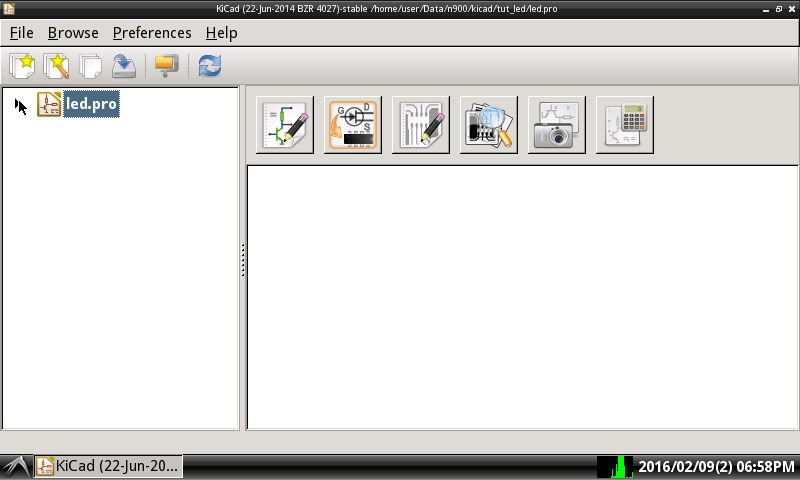

Steward
分享是一種喜悅、更是一種幸福
繪圖相關 - KiCAD - 0.20140622 BZR4027 - 開發環境
雖然司徒最熟悉的PCB設計工具是Protel 99SE，但是受限于Protel 99SE無法在司徒的N900上執行，因此，司徒只好另尋Linux上可用的PCB設計工具，在搜尋一些文章後，司徒發現KiCAD是相當不錯的PCB設計工具，加上佔用極少的資源，最棒的是，KiCAD可以順利的在司徒的N900上執行，而有鑑於N900本身的便利性，攜帶式的PCB設計已經變成可行，這才讓司徒認真學習KiCAD並且分享一些KiCAD的教學文章
目前司徒是在Easy Debian環境下使用KiCAD(wheezy-backports)軟體，因此使用者需先自行搭建Easy Debian環境並且安裝KiCAD軟體，這部份請上Google搜尋或參考司徒的相關文章
